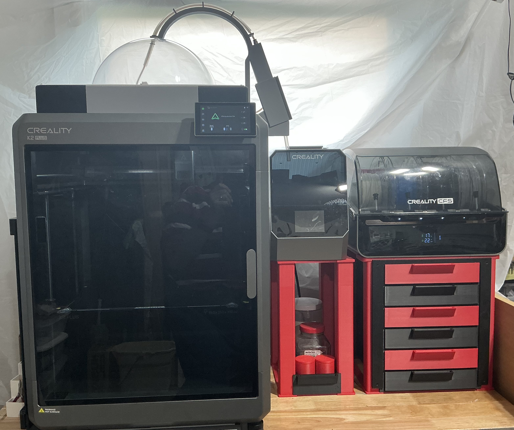

Workstations

aK2PW - K2 Pro Workstation
A modular, precision‑aligned drill press workstation designed for accuracy and repeatability.

DPPW - Drill Press Pro Workstation
A modular, precision‑aligned drill press workstation designed for accuracy and repeatability.

Sanding & Finishing Station
Organized, ergonomic, and built for smooth finishing workflows.